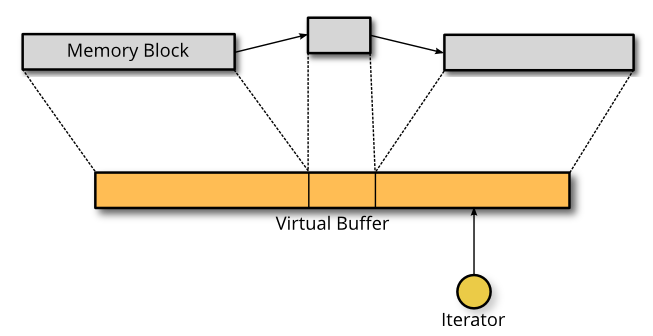

3. Buffers¶
Virtual buffer allows to access memory data. Using scatter lists, it enables easy and efficient modifications on memory data.
3.1. Buffer¶
- object vbuffer¶
The main buffer object.
- haka.vbuffer_allocate(size, zero = true) → vbuffer¶
Parameters: - size (number) – Requested memory size.
- zero (boolean) – Zero the memory.
Returns: - vbuffer (vbuffer) – Created buffer.
Allocate a new buffer with a specific size.
- haka.vbuffer_from(string) → vbuffer¶
Parameters: - string (string) – Source data.
Returns: - vbuffer (vbuffer) – Created buffer.
Allocate a new buffer from a Lua string.
Warning
The string will be copied into the allocated buffer.
- <vbuffer>[index] → byte¶
- <vbuffer>[index] = byte
Parameters: - index (number) – Byte index in the data.
Get or set a byte in the data.
- #<vbuffer> → count¶
Returns: - count (number) – Number of bytes in the buffer.
Get the size of the buffer.
- <vbuffer>:pos(offset = 'begin') → iter¶
Parameters: - offset (number or string) – Position offset as number, 'begin' or 'end'.
Returns: - iter (vbuffer_iterator) – Iterator at the required position.
Return an iterator at the given offset in the buffer.
- <vbuffer>:sub(offset = 0, size = 'all') → sub¶
Parameters: - offset (number) – Position offset.
- size (number or string) – Size of the requested sub-buffer or 'all'.
Returns: - sub (vbuffer_sub) – Create sub-buffer.
Return a sub-part of the buffer.
- <vbuffer>:append(data)¶
Parameters: - data (vbuffer) – Data to append to the buffer.
Insert some data at the end of the current buffer.
Note
Data will be transfered from the vbuffer you passed making data empty after this call.
- <vbuffer>:clone(copy=false) → clone¶
Parameters: - copy (boolean) – If true copy the memory otherwise it is shared.
Returns: - clone (vbuffer) – Cloned buffer.
Clone the buffer and optionally copy its memory data.
- const <vbuffer>.modified¶
Type: boolean true if the buffer has been modified, false otherwise.
3.2. Sub-buffer¶
- object vbuffer_sub¶
Object used to represent part of a buffer.

- haka.vbuffer_sub(begin, end) → sub¶
Parameters: - begin (vbuffer_iterator) – Beginning position.
- end (vbuffer_iterator) – Ending position.
Returns: - sub (vbuffer_sub) – Created sub-buffer.
Create a sub-buffer for two iterator.
Note
The two iterators must be built from the same buffer.
- <vbuffer_sub>[index] → byte¶
- <vbuffer_sub>[index] = byte
Parameters: - index (number) – Byte index in the data.
Get or set a byte in the data.
- #<vbuffer_sub> → count¶
Returns: - count (number) – Number of bytes in the buffer.
Get the size of the sub-buffer.
- <vbuffer_sub>:pos(offset = 'begin') → iter¶
Parameters: - offset (number or string) – Position offset as number, 'begin' or 'end'.
Returns: - iter (vbuffer_iterator) – Iterator at the required position.
Return an iterator at the given offset in the buffer.
- <vbuffer_sub>:sub(offset = 0, size = 'all') → sub¶
Parameters: - offset (number) – Position offset.
- size (number or string) – Size of the requested sub-buffer or 'all'.
Returns: - sub (vbuffer_sub) – Create sub-buffer.
Return a sub-part of the buffer.
- <vbuffer_sub>:zero()¶
Zero the sub-buffer memory data.
- <vbuffer_sub>:erase()¶
Erase the sub-buffer.
- <vbuffer_sub>:replace(data)¶
Parameters: - data (vbuffer) – Buffer.
Replace the sub-buffer by some new data.
Note
Data will be removed from the given parameter making data empty after this call.
- <vbuffer_sub>:isflat() → isflat¶
Returns: - isflat (boolean) – true if the buffer is flat.
Check if the buffer is flat (ie. it is made of only one memory chunk).
- <vbuffer_sub>:flatten()¶
Replace the sub-buffer by a flat buffer containing only one memory chunk.
Warning
The memory will be copied if needed.
- <vbuffer_sub>:size() → size¶
Returns: - size (number) – Size of the sub-buffer.
Compute the size of the sub-buffer.
- <vbuffer_sub>:check_size(size) → enough, size¶
Parameters: - size (number) – Minimum buffer size to check for.
Returns: - enough (boolean) – true if the sub-buffer is larger or equal to size.
- size (number) – If enough is false, size of the sub-buffer.
Check if the buffer size is larger or equal to a given value.
- <vbuffer_sub>:select() → iter, buffer¶
Returns: - iter (vbuffer_iterator) – Reference iterator.
- buffer (vbuffer) – Extracted buffer.
Select this sub-buffer. The content is extracted from the buffer. To reinsert the data, you can use <vbuffer_iterator>.restore() with the reference iterator that is returned as the first value.
Warning
Be sure to keep the reference iterator or you won’t be able to restore this sub-buffer.
- <vbuffer_sub>:asnumber(endian = 'big') → num¶
Parameters: - endian (string) – Endianness of data ('big' or 'little')
Returns: - num (number) – Computed value.
Read the sub-buffer and convert it to a number.
- <vbuffer_sub>:setnumber(value, endian = 'big')¶
Parameters: - value (number) – New value.
- endian (string) – Endianness of data ('big' or 'little')
Write a number to the buffer.
Note
This call throw an error if the number can’t fit in the sub-buffer.
- <vbuffer_sub>:asbits(offset, length, endian = 'big')¶
Parameters: Read some bits the buffer and convert it to a number.
- <vbuffer_sub>:setbits(offset, length, value, endian = 'big')¶
Parameters: Write a number to some bits of the buffer.
- <vbuffer_sub>:asstring() → str¶
Returns: - str (string) – Computed value.
Read the sub-buffer and convert it to a string.
- <vbuffer_sub>:setstring(value)¶
Parameters: - value (string) – New value.
Replace the sub-buffer by the given string.
Note
If the string is larger or smaller than the current value, the buffer will be extended or shrinked to hold the new value.
- <vbuffer_sub>:setfixedstring(value)¶
Parameters: - value (string) – New value.
Replace, in-place, the sub-buffer by the given string. The size of the buffer will not change.
3.3. Iterator¶
- object vbuffer_iterator¶
Iterator on a buffer. An iterator can be blocking when working on a stream. In this case, some functions can block waiting for more data to be available.
- <vbuffer_iterator>:mark(readonly = false)¶
Parameters: - readonly (boolean) – State of the mark.
Create a mark on the buffer at the iterator position.
- <vbuffer_iterator>:unmark()¶
Remove a mark on the buffer.
Note
The iterator must point to a previously created mark otherwise an error will be raised.
- <vbuffer_iterator>:advance(size) → relsize¶
Parameters: - size (number) – Amount of bytes to skip
Returns: - relsize (number) – The real amount of bytes skipped. This value can be smaller than size if not enough data are available.
Advance the iterator of the given size bytes.
- <vbuffer_iterator>:available() → size¶
Returns: - size (number) – Available bytes.
Get the amount of bytes available after the iterator position.
- <vbuffer_iterator>:check_available(size) → enough, size¶
Parameters: - size (number) – Minimum buffer size to check for.
Returns: - enough (boolean) – true if the available data are larger or equal to size.
- size (number) – If enough is false, size of the available data.
Check if the available bytes are larger or equal to a given value.
- <vbuffer_iterator>:insert(data) → sub¶
Parameters: - data (vbuffer) – Buffer to insert.
Returns: - sub (vbuffer_sub) – Sub-buffer matching the inserted data in the new buffer.
Insert some data at the iterator position.
Note
Data will be removed from the given parameter making data empty after this call.
- <vbuffer_iterator>:restore(data)¶
Parameters: - data (vbuffer) – Buffer to restore.
Restore data at the iterator position. This iterator must be the reference iterator returned by <vbuffer_sub>.select().
- <vbuffer_iterator>:sub(size, split = false) → sub¶
Parameters: - size (number or string) – Size of the requested sub-buffer, 'available' or 'all'.
- split (boolean) – If true, a split will be done at the end of the sub-buffer (see <vbuffer_iterator>.split()).
Returns: - sub (vbuffer_sub) – Created sub-buffer.
Create a sub-buffer from the iterator position.
- <vbuffer_iterator>:split()¶
Split the buffer at the iterator position.
- <vbuffer_iterator>:move_to(iter)¶
Parameters: - iter (vbuffer_iterator) – Destination iterator.
Move the iterator to a new position.
- <vbuffer_iterator>:wait() → eof¶
Returns: - eof (boolean) – true if the iterator is at the end of the buffer.
Wait for some data to be available.
- <vbuffer_iterator>:foreach_available() → loop¶
Return a Lua iterator to build a loop getting each available sub-buffer one by one.
Usage:
for sub in iter:foreach_available() do print(#sub) end
- <vbuffer_iterator>.meter¶
Type: number Index that can be used to track the offset of the iterator. This index is automatically updated when the iterator advance.
Note
Some functions, like <vbuffer_iterator>.move_to() does not advance meter correctly.
- const <vbuffer_iterator>.iseof¶
Type: boolean true if the iterator is at the end of buffer and no more data can be available even later in case of a stream.
3.4. Streams¶
- object vbuffer_stream¶
A buffer stream is an object that can convert different separated buffers into a view where only one buffer is visible. This is for instance used by TCP to recreate a stream of data from each received packets.

- haka.vbuffer_stream() → stream¶
Returns: - stream (vbuffer_stream) – New stream.
Create a new buffer stream.
- <vbuffer_stream>:push(data) → iter¶
Parameters: - data (vbuffer) – Buffer data.
Returns: - iter (vbuffer_iterator) – Iterator pointing to the beginning of the new added data in the stream.
Push some data into the stream.
- <vbuffer_stream>:finish()¶
Mark the end of the stream. Any call to <vbuffer_stream>.push() will result to an error.
- <vbuffer_stream>:pop() → buffer¶
Returns: - buffer (vbuffer) – Extracted data from the stream.
Pop available data from the stream.
- const <vbuffer_stream>.isfinished¶
Type: boolean Get the stream finished state.
- object vbuffer_sub_stream¶
A sub stream is an object that will build a stream view from a list a sub-buffer.
- haka.vbuffer_sub_stream() → sub_stream¶
Returns: - sub_stream (vbuffer_sub_stream) – New stream.
Create a new sub-buffer stream.
- <vbuffer_sub_stream>:push(data) → iter¶
Parameters: - data (vbuffer_sub) – Sub-buffer data.
Returns: - iter (vbuffer_iterator) – Iterator pointing to the beginning of the new added data in the stream.
Push some data into the stream. The sub-buffer will be extracted with a <vbuffer_sub>.select().
- <vbuffer_sub_stream>:finish()¶
Mark the end of the stream. Any call to <vbuffer_sub_stream>.push() will result to an error.
- <vbuffer_sub_stream>:pop() → sub¶
Returns: - sub (vbuffer_sub) – Extracted data from the stream.
Pop available data from the stream and automatically do a <vbuffer_iterator>.restore().
- const <vbuffer_sub_stream>.isfinished¶
Type: boolean Get the stream finished state.
3.5. Stream coroutine manager¶
Warning
This section introduces advanced feature of Haka.
- object vbuffer_stream_comanager¶
This class allow to execute function inside a coroutine and to be able to block transparently if needed when the stream does not have enough data available.
- <vbuffer_stream_comanager>:new(stream) → manager¶
Parameters: - stream – buffer stream
Paramtype : Returns: - manager (vbuffer_stream_comanager) – instanciated stream coroutine manager object
- <vbuffer_stream_comanager>:start(id, f)¶
Parameters: - id (any) – Identifier for the registered function.
- f (function) – Function to be started.
Register and start a new function on the stream.
- <vbuffer_stream_comanager>:has(id) → found¶
Parameters: - id (any) – Identifier for the registered function.
Returns: - found (boolean) – true if the id is found inside the registered functions.
Check if the given id match a registered function.
- <vbuffer_stream_comanager>:process(id, current)¶
Parameters: - id (any) – Identifier for the registered function.
- current (vbuffer_iterator) – Current position in the stream.
Resume execution for the registered id. This function needs to be called whenever some new data are available on this stream.
- <vbuffer_stream_comanager>:process_all(current)¶
Parameters: - current (vbuffer_iterator) – Current position in the stream.
Resume execution for all registered functions.